🤖 Your GPU, Your Rules
Running Local AI Coding Assistants in Eclipse Theia
TheiaCon 2026 | Ericsson Software Technology
Open with energy. The joke: you don't need a datacenter, you need the GPU already collecting dust in your closet. Set the tone - fun but technically real. The Theia wordmark is the official logo from theia-ide.org.
🧑💻 What Even Is AI-Assisted Coding?
⌨️ Autocomplete : finish the line/block as you type
💬 Chat : explain, document, "why is this null?"
🤖 Agentic : multi-step edits across files with tools
🔍 Review : spot bugs, smells, and missing tests
A spectrum from "smart tab key" to "junior dev with a shell." 🧠
Frame the whole space before we optimize hardware. Everyone means something different by "AI coding." Autocomplete is low-risk and high-value; agentic is powerful but needs guardrails (callback to the sandbox slide later).
💡 Why AI-Assisted Coding At All?
✨ Code generation is genuinely good now
🧹 Kills the boilerplate you hate writing
🎯 Lets you focus on the actual algorithm , not the plumbing
🔧 It's a tool - a great one - like the debugger or the compiler
✅ You still design and decide. The AI just types faster than you do.
Open on the upside so the audience is not defensive. Generation quality crossed a threshold - it removes drudgery (boilerplate, glue, tests) so your brain stays on the hard part: the algorithm and the design. Frame it as a tool alongside compilers, linters, debuggers. Not a replacement for judgment.
⚖️ But... Code Is a Liability
📦 Code is not an asset - it's a liability you maintain
🔧 More code = more bugs, more patches, more surface area
😅 AI just automated liability creation - at scale
🧑⚖️ Review and debug are still a human problem
⚠️ The best line of code is the one you didn't have to write - or maintain.
The counterweight to slide 1. Every line you ship is something someone must understand, patch, and secure for years. AI makes generation nearly free, which means it makes liability nearly free too - you can now create maintenance burden faster than ever. The bottleneck moves downstream: reviewing and debugging that code is still on humans. This sets up the "generation vs review" thesis and the whole local/agent story.
✅❌ Generation vs Review
💚 Where it shines
Boilerplate + glue code
Tests, docs, regexes
Unfamiliar API lookups
First-draft generation ✨
⚠️ Where it bites
Confident-but-wrong code 🎭
Novel algorithms / architecture
Security-critical logic
Being the final reviewer 🚫
⚠️ AI is a great generator and a shaky reviewer . You stay the reviewer of record.
The key mental model of the talk: lean on AI for generation, keep a human as the reviewer of record. It will happily approve its own hallucinations. Generation multiplies output; review still needs a skeptical human, because the model has no accountability and no real-world stakes.
🧠 How Do LLMs Actually Work?
Text → tokens → vectors 🔢
A giant pile of weights predicts the next token
Every token = billions of memory reads of those weights
Do it in a loop → sentences, code, essays 🔁
ℹ️ Inference is memory-bandwidth bound: the bottleneck is reading weights, not math.
Demystify without dumbing down. The model predicts the statistically likely next token from patterns in its weights. The key hardware insight: each generated token streams the whole active weight set from memory, so memory BANDWIDTH (not raw FLOPS) is usually the limiter. This is why VRAM speed matters as much as size.
🎬 Inference, Visualized

Let the animation play. Point out the memory reads streaming into the compute units - that is the bandwidth bottleneck in motion.
📐 Wider, Then Deeper
📏 Wider : more parameters = smarter... up to a point
📉 Diminishing returns - doubling params doesn't double smarts
🧗 So models went deeper : reasoning, multi-step, "think first"
⏳ Deeper = more tokens per answer = more time and more RAM
⚠️ Reasoning models trade latency and memory for better answers. Pick your poison.
The scaling story: first we scaled width (parameter count), which hit diminishing returns and huge memory costs. Then the industry pivoted to test-time compute - reasoning models that generate long chains of thought. That buys quality but spends tokens, time, and KV-cache memory. This directly motivates the hardware conversation coming up.
🤖 How Do Agents Work?
LLM + a loop + tools = an agent 🔧
Think → call a tool (read file, run test, git) → observe → repeat 🔁
MCP servers are the tools; the model decides when to use them 🛠️
Stops when the task is "done" (or the token budget runs out 😅)
The model is the brain; the loop and tools are the hands. That's the whole trick.
An agent is not magic - it is a while-loop around an LLM that can call tools and read the results back. This is why sandboxing (Enclave) matters: the loop can run shell commands. Callback forward to the security slide.
🎬 The Agent Loop, Visualized
Let it loop once. Trace the think → act → observe cycle. The token counter in the corner ticks up live to show tokens accumulate every iteration - agents are the hungriest workload. (Embedded via <object> so the counter script actually runs.)
🧮 The Catch: Complexity & Memory
Every token attends to every other → cost grows fast 📈
The KV cache grows with context - and eats VRAM 🍽️
Long context = more memory + slower each step 🐌
Accuracy drops the deeper you go - more hallucinations 🤥
Weights + KV cache + overhead must ALL fit in memory 📦
⚠️ Rule of thumb: model size sets the floor, context length sets the ceiling - and stuffing the ceiling makes it dumber.
Attention is roughly quadratic in sequence length, and the KV cache is linear per token but adds up fast. This is the real reason "it won't fit" - it is not just the weights, it is the weights PLUS the running context. Also critical: accuracy degrades as context grows - models "lost in the middle" forget details, drift, and hallucinate more the further into a long context you push them. So a bigger context window is not free lunch: it costs memory, speed, AND reliability. Keep prompts focused.
🌍 Why Even Bother? (The Vibe)
Every keystroke you type ships to someone else's computer 📡
Your code is the crown jewels - and you are renting the vault 🔐
Token meters running 24/7 while you sleep 💸
Airplane mode = coding mode? Not anymore ✈️
This is a systemic problem: we outsourced our brains and forgot where we put them.
Set up the systemic framing. It is not one tool, it is the whole industry defaulting to the cloud. Pause on the "renting the vault" line.
🔥 The "This Is Fine" Status Quo
Vendor rate-limits you mid-refactor
Model gets "updated" and dumber overnight
Privacy review says no to the cloud 🙅
The "this is fine" dog is the whole industry accepting these tradeoffs. Land the "dumber overnight" line - everyone has felt it.
⚖️ Local AI vs Cloud AI
Dimension ☁️ Cloud 🏠 Local
Raw smarts 🏆 Frontier Good enough (often) Privacy ❓ "Trust us" ✅ Your machine Cost 💸 Per token ⚡ Electricity Latency 🌐 Network 🚀 Local bus Offline ❌ Nope ✅ Airplane-ready
Do not oversell local. Cloud still wins on raw smarts. Local wins on everything you can actually control.
☁️ The Cloud Contenders
Know your options before you cut the cord ✂️
Transition slide. We are being fair to the cloud before pivoting to local.
√-1 Tokens
A "token" is ~4 characters... or ~0.75 words... it depends 🤷
Same prompt, different tokenizer, different bill
Prices swing 10x between vendors for similar quality 📉📈
Input vs output vs cached tokens: three different meters ⏱️
⚠️ You are billed in a unit you cannot see, at a price that changes on a whim.
The core point: token pricing is an abstraction the vendor controls end to end. They define the unit AND the price. Same work can cost wildly different amounts. It is not a market price, it is a menu price.
🧮 When Does Local Get Cheaper?
💡 It's a break-even: hardware + electricity vs monthly tokens
A used 16GB GPU (~a few hundred $) pays back in months of heavy use ⚡
Light user? Cloud is cheaper - don't buy a GPU to save $8/mo 😅
Team of heavy agentic users? Local wins hard
Break-even ≈ GPU cost ÷ (your monthly cloud spend − electricity). The heavier you use AI, the faster local pays off.
Give them a mental model, not a false precise number. Break-even = upfront hardware divided by monthly savings. Heavy/agentic workloads (which burn tokens fast) tip toward local quickly. Casual users should stay on cloud. Honesty builds trust.
🔐 Security & Privacy Concerns
☁️ Your code leaves the building 📤
Prompts may be baked into future model weights 🧠
...then leaked verbatim, with zero traceability 🕳️
Retention + subpoena + breach risk 😬
Compliance (GDPR, IP, export) 🚧
The cloud security model is "trust us." For proprietary code, regulated industries, or IP-sensitive work that is a hard sell. Read the bullets with a skeptical tone. The "trust me bro" GIF lands.
🏠 Now... Let's Go Local
Pick a model that fits your VRAM budget 📦
Energy shift. This is the heart of the talk. VRAM is destiny.
🧰 What You Actually Need
🖥️ A GPU (or a Mac, or a fancy new mini-PC)
⚡ GPUs are 10x-100x faster than CPUs for this
🧠 A runtime: Ollama, llama.cpp, or LM Studio
📦 A quantized model that fits your VRAM (this is the whole game)
⚠️ Offloading layers to the CPU usually tanks tok/s - avoid it unless you really know what you're doing.
Keep it concrete. The ingredients. GPUs are 10x-100x faster than CPUs for inference because of memory bandwidth and parallelism, so fitting the whole model in VRAM matters enormously. The tempting escape hatch - "just offload some layers to CPU/RAM when it doesn't fit" - almost always craters throughput, because every token then waits on the slow CPU-side layers. Better to pick a smaller model or a bigger card than to split. Only offload if you understand the bandwidth tradeoff. Fitting VRAM is the constraint everything revolves around.
💥 Oh, And the Global RAM Crisis
AI demand vacuumed up HBM + DRAM supply 🌀
Memory prices spiked, lead times ballooned ⏳
That 24/32 GB card? Suddenly precious 💎
Unified-memory boxes are hot commodities 🔥
Memory is the new oil. Buy the VRAM while you can. ⛽
The AI boom created a genuine memory squeeze - HBM for datacenter GPUs and DRAM broadly. This makes high-VRAM used cards (M40, MI50) and unified-memory machines even more attractive, and it is a real budgeting concern for anyone speccing local AI hardware right now. The Gatsby toast lands the "raise a glass to whoever still owns cheap VRAM" joke.
🎚️ Model Sizes by VRAM (1/2)
VRAM
Representative model
Quant
Good for
4 GB Gemma 4 E4B / Qwen3 4B Q4_K_M
Basic coding, syntax, edits.
8 GB Gemma 4 E4B / Qwen3 8B Q4_K_M
General assistant, coding, reasoning.
12 GB Gemma 4 12B / Qwen3 14B Q4_K_M
Strong coding and reasoning.
params (B) × ~0.6 = GB at Q4_K_M. Press ↓ for 16–32 GB. 🧮
Small-to-mid tiers. The 0.6 rule of thumb is roughly right for Q4_K_M (~4.5 bits/weight). Names verified on ollama.com / Hugging Face. Press down for the big-VRAM tiers.
🎚️ Model Sizes by VRAM (2/2)
VRAM
Representative model
Quant
Good for
16 GB Gemma 4 26B-A4B / Qwen3 30B-A3B (MoE) Q4_K_M
MoE fits with modest context; 12B leaves room for more.
24 GB Gemma 4 31B / Qwen3 32B Q4_K_M
Serious coding, reasoning, agentic - a 32B fits! 🎯
32 GB Qwen3 32B / Gemma 4 31B Q5_K_M–Q6_K
Same models, higher-quality quant + more context.
MoE (26B-A4B, 30B-A3B) activate ~3-4B params/token. Qwen3 & Gemma 3 are still great - just current picks. 🧮
Big-VRAM tiers. The MoE models activate only ~3-4B params per token, so they run fast and their Q4 footprint fits 16 GB. Higher VRAM mostly buys better quant (Q5/Q6) and longer context, not always a bigger model. Caveat out loud: previous generations (Gemma 3, earlier Qwen) are NOT bad - perfectly usable; the table just lists current picks to keep it simple. Context eats VRAM too.
🧬 The Open-Weights Families
Family Who Why you'd pick it
Qwen3 (4B–32B, MoE)Alibaba Cloud Strong coder variants, sizes for every VRAM, permissive licenses 🏆 Gemma 4 (E4B–31B)Google DeepMind Open weights, efficient small models, great E4B for autocomplete ⚡ Muse Meta Generative world/creative model - beyond text 🎨
Qwen3 & Gemma 4 cover the coding workhorses; Meta's Muse points at the generative future. 🔮
Qwen3 (Alibaba) is the open-weights coding workhorse - permissive licenses and sizes from 4B to 32B (plus the 30B-A3B MoE) make it the community default for fine-tunes. Gemma 4 (Google DeepMind) is open-weights with excellent small models; the E4B is a superb fast autocomplete model and the 26B-A4B is a handy MoE. All sizes verified on ollama.com / Hugging Face. Meta's Muse is a different beast - a generative model aimed at creative/world generation rather than code, which foreshadows the ComfyUI/local-imagery future-work slide. Keep the framing honest: Qwen3 and Gemma 4 are what you actually code with today.
📦 MLX vs GGUF
🍎 MLX
Apple Silicon native
Uses unified memory well
Fast on M-series Macs
Mac-only
🌍 GGUF
llama.cpp / Ollama format
Runs everywhere (CUDA/ROCm/CPU)
Huge quant selection
The portable default
On a Mac? Try MLX for speed. Anywhere else (or mixed rigs)? GGUF. 🎯
Two ways to package quantized weights. MLX is Apple's framework - it exploits unified memory and is the fastest path on M-series Macs, but it is Mac-only. GGUF is the llama.cpp/Ollama format: portable across NVIDIA, AMD, Intel, and CPU, with the widest range of quant levels. Rule of thumb: MLX if you live on a Mac and want max tok/s; GGUF for everything else and for portability across the bargain-bin cards we just covered.
🖥️ The Hardware Zoo
From e-waste bargains to shiny new silicon
The fun part for the hardware nerds. We go from cheap-and-cursed to premium.
💾 Server Pulls
Used prices via GPU Dojo (approx, they move). Ex-datacenter cards: huge VRAM, big cooling energy. 🔥 (press ↓ for M40 & MI50 detail)
⚠️ Server gear may need extra DRAM , PCIe ReBAR , or VFIO to behave. May not support fast attention, or other features assumed to exist, may need recompilations. Don't know those terms? Come see me after the talk. 🍻
This is genuinely USED SERVER gear, hence "bargain bin." The P100 is the cheapest way into 16GB HBM2. The M40 needs a 3D-printed shroud and a blower fan. The MI50/MI100 have HBM2 for peanuts but ROCm/datacenter drivers will test your patience. Real gotchas: these cards often want lots of system DRAM to load models, PCIe Resizable BAR (ReBAR) enabled in BIOS to map the full VRAM, and sometimes VFIO passthrough if you run them in a VM/container. The "come see me after" line is a friendly way to keep the talk moving without a 10-minute BIOS tangent. Press down for the two crowd-favorite cards in detail. Prices are approximate used-market figures from GPU Dojo.
Example cards
Card VRAM ~Used $ The Catch
🟦 AMD BC-250 16 GB ~$220 Repurposed failed PS5 APU - a hacker's toy 🎮 🟩 Tesla P100 16 GB ~$280 HBM2, Pascal, fanless 🧊 🟥 AMD MI50 16 GB ~$173 HBM2, ROCm may be difficult 🟩 Tesla M40 24 GB ~$146 Maxwell, passive - needs a cooling hack 🟩 Tesla P40 24 GB ~$299 Pascal, faster than M40, still fanless 🟥 AMD MI50 32 GB ~$600 HBM2, ROCm 🟩 Tesla V100 32 GB ~$800 Volta, faster than Pascal, no tensor cores, still fanless 🟥 AMD MI100 32 GB ~$880 CDNA, big bandwidth, datacenter drivers
🟩 Tesla M40 24GB - The Cursed Champion
24 GB VRAM for the price of a nice dinner 🍽️
Passive cooling = you MUST bolt on a blower fan 🌬️
Maxwell era: slow-ish, no modern tensor cores
Runs 14B models happily via llama.cpp / Ollama ✅
Perfect for a homelab "AI box" that idles quietly in a closet.
The M40 is a meme-tier card. It works! Just accept the cooling jank and modest speed. Great for batch/chat where latency is forgiving.
🟥 MI50 - The HBM2 Sleeper
Fast HBM2 bandwidth for pennies 🚀
ROCm or Vulkan backend in llama.cpp
Fits bigger models or big context windows 📚
Driver setup is the boss fight 🐉
The MI50 is the sleeper pick if you can survive the ROCm install. HBM2 bandwidth opens up 14B at higher precision or long contexts. (16GB variant is the common cheap one; 32GB exists but is pricier.)
🕹️ Special Mention: AMD BC-250
A PS5-derived APU that failed QC 🎮
Repurposed from crypto-mining blade servers ⛏️
16 GB, ~$220 - a hacker's bargain toy 🧰
Runs small/MoE models via Vulkan; quirky setup 🐧
Cursed silicon reborn: mining rig cast-off → local AI box. 💀➡️🤖
The BC-250 is a fun oddity - it's the PS5's Oberon APU that didn't pass Sony's quality control, sold into crypto-mining blade chassis, and now flooding the used market as those miners get scrapped. 16GB, dirt cheap (~$220), Vulkan backend, community-hacked drivers. Not for the faint of heart, but a great story and a genuinely usable small/MoE inference box. The ultimate e-waste-to-AI redemption arc.
🎮 New Value Cards (Gaming / Consumer)
Card VRAM ~$ Notes
🔵 Intel Arc A770 16 GB ~$300 used IPEX-LLM/SYCL/Vulkan, improving fast 📈 🟥 RX 6800 XT 16 GB ~$399 used ROCm/Vulkan, solid value 🎮 🟥 RX 6900 XT 16 GB ~$450 used ROCm/Vulkan, more compute 🟥 RX 7900 XT 20 GB ~$650 used RDNA3, most VRAM here 🟢 RTX 5070 Ti 16 GB ~$995 new CUDA "just works", fast 🚀
Prices via GPU Dojo. These are current/consumer cards - not "bargain bin," just good value. 💡
Distinct from the used-server tier: these are modern gaming/consumer cards you can buy new or lightly used. Arc is the cheapest 16GB newcomer, the RDNA cards are the AMD sweet spot, and the RTX 5070 Ti is the zero-drama CUDA option if you will pay for it. Do not call these bargain bin - that term is reserved for the ex-datacenter gear on the previous slide.
🟢 The Modern GeForce / CUDA Option
Card VRAM ~$ Why
RTX 3090 24 GB ~$1,499 used Best used $/tok, 24GB 🏆 RTX 4090 24 GB ~$2,073 new Fast prefill, easy setup RTX 5090 32 GB ~$6,500 new Top tok/s, most VRAM 🚀
Prices via GPU Dojo. CUDA "just works" for every runtime - pay more, suffer less. The used 3090 is the sweet spot. 💡
The modern GeForce is the "just works fast" option. CUDA ecosystem is unmatched for ease. The used RTX 3090 is the community darling - 24GB with great bandwidth at roughly half a 4090. The 5090 brings 32GB and top speed if budget is no object. Prices from GPU Dojo, approximate.
🧩 The Unified Memory Revolution
Platform Trick Why it rocks
🍎 MacBook (M-series) Unified memory 64-128GB shared = huge models, silent, efficient 🔴 AMD Ryzen AI Max "Strix Halo" Big iGPU + unified RAM 96GB+ addressable to the GPU 🤯 🟢 NVIDIA DGX Spark Grace-Blackwell + 128GB Desktop "AI supercomputer" 🚀
No VRAM ceiling drama: system memory IS the VRAM. 🧠
This is the future. Unified memory kills the "won't fit in VRAM" problem. Mac started it, Strix Halo brought it to x86, DGX Spark is the halo product. These run 70B+ models locally.
📊 Price vs VRAM (Used Market)
Approx used prices via GPU Dojo. Lower + further right = more VRAM per dollar. 💰
Visual summary of the hardware section. The bottom-right is the value zone: lots of VRAM, low price - that is where the used server gear (M40, P100, MI50) lives. The GeForce cards climb the price axis for speed and ease. Let the audience find their budget on the x-axis.
The IDE is already AI-native - just point it home 🏠
Pivot to the main event. Theia has first-class AI support. We just redirect it to a local endpoint.
Point Theia at Your Local Model
Run ollama serve (OpenAI-compatible on :11434) 🟢
Open Theia AI settings → add a custom model provider
Set base URL to http://localhost:11434/v1
Pick your model: qwen3:32b (fits a 24 GB card!) 🎯
✅ No API key. No egress. No monthly bill. Just localhost. 🎉
The whole trick: Theia's AI features speak the OpenAI API, and Ollama serves that API locally. Change the base URL, done.
⚙️ The Config (It's Tiny)
"ai-features.ollama.ollamaModels": [
"gemma4:e2b"
]
Just register the models you've pulled with Ollama - Theia discovers them automatically. 🧠⚡
That's the whole config: list the Ollama models you've already pulled under ai-features.ollama.ollamaModels and Theia picks them up. Here it's gemma4:e2b - a tiny, fast model that's great for autocomplete and runs comfortably on modest VRAM. Add more entries to switch between completion and chat models.
Local MCP Servers are Key
🗂️ Filesystem MCP: let the agent read/write your repo safely
🐙 Git MCP: diffs, blame, history without leaving the IDE
🗄️ Database MCP: query your local DB in-context
All running on your machine - nothing phones home 📵
ℹ️ MCP = Model Context Protocol. Tools for your model, wired up locally. LSP for AI.
🔒 Reminder: Theia is security-first - the agent can't touch a tool until you grant permission . Nothing runs behind your back.
MCP is how the local model gets hands. Because the servers are local too, the whole loop stays private. This is the killer combo. Important: Theia does not auto-trust tools - it is security-first, so you explicitly grant each MCP server / tool permission before the agent can use it. No silent filesystem writes or shell calls. This pairs with the "Local Isn't Magic / sandbox the agent" slide - permissions are your first line of defense.
📈 The Trace Server MCP
Point the agent at a Trace Compass trace server
"Why did CPU spike at t=4.2s?" → the model queries real trace data
Detect anomalies, correlate outputs, find the root cause 🕵️
Performance debugging, fully local, fully private
Your AI assistant can now read flame graphs so you don't have to squint. 🔥
This is the EST home-turf flex. A trace-server MCP lets the local model do real performance analysis on LTTng/CTF traces. Great demo hook.
🔧 Hacking Theia Itself (because you can)
🩺 Better "fetch failed" errors — so you know why the local endpoint didn't answer, instead of a bare stack trace
⏱️ Per-response usage stats — watch tokens tick up so you can tell when you're creeping toward a timeout
🔁 Tool-loop guard — catches the agent looping when the context window is too small to make progress
🟢 Local-model fixes — pass the full tool schema to Ollama so local models can actually call tools
✅ Own the GPU and the IDE. Theia is open source — when it annoys you, you patch it. 🛠️
All on local feature branches of Eclipse Theia — admin of your own stack, top to bottom.
The "I own the whole stack" flex. Because Theia is open source and these models run on my own GPUs, I don't file a ticket and wait — I open a branch and fix it. One real local branch per bullet: better_explain_fetch_failed surfaces WHY a local Ollama/endpoint call failed (connection refused, model not loaded, wrong port) instead of a bare "fetch failed." show_usage puts per-response token/usage stats in the chat — the practical use is spotting when a long response is approaching the request timeout so you can intervene. reset-loop adds a tool-call loop guard: on small local models a too-small context window makes the agent repeat the same tool call forever, and this stops that waste. local_ai + the Ollama schema fix make local models first-class — passing the full tool parameter schema through so they can actually use tools. Tie back to the thesis: you stay the director — and when the tool fights you, you also own the tool.
🪟 Context Size Is the Real Impediment
😵 Default local context is tiny — the agent runs out of room mid-task and starts flailing
🛠️ Fix it yourself: build a custom Ollama / LM Studio / vLLM model with a bigger num_ctx
✅ It can go big: Qwen3 8B handles 256k today
⚠️ But not everything does: Muse ships 8k , Gemma is modest too — know your model's ceiling
📥 Input tokens matter : a fat system prompt eats the window before you've typed a thing
✅ My fix: a custom agent called nakedno system prompt. Locally it just performs better. 🩲
You own your GPU and your VRAM. This isn't a datacenter that costs more than your life savings. Tradeoffs exist, but the end result is pretty good. 💪
This is the honest "here's what actually bites you locally" slide, and it pairs with the earlier KV-cache slide. The number one practical impediment to local agentic coding is context size: Ollama and friends default to a small context window (often 2k to 8k), so the agent fills up fast and then thrashes, re-reading files, looping, losing the thread. The good news is you own the stack, so you fix it: author a custom model (an Ollama Modelfile with a larger num_ctx, or the equivalent in LM Studio / vLLM) to expose a bigger window. And models genuinely support it: as of today Qwen3 8B handles 256k context, which is enormous for a model that fits a cheap card. But be honest about the ceiling: not every model is generous. Meta's Muse ships with only 8k, and Gemma's windows are comparatively modest, so match the model to the job and don't assume 256k everywhere. The subtler lever is input tokens: every token you feed in (system prompt, tool schemas, file context) is context you spend before the model does any work, AND it costs latency and KV-cache memory. That's why I built a custom agent called "naked" with no system prompt at all: on local models, stripping the prompt consistently performs better, less to attend to, more room for the real task, faster first token. Input tokens matter as much as output tokens. Callback: this is the "stuffing the ceiling makes it dumber" point made actionable. End on the ownership note: tune the window as high as your VRAM allows and accept the tradeoff, because you own your GPU and your VRAM. You are not renting a datacenter that costs more than your life savings; the knobs are yours to turn, and even with the tradeoffs the end result is genuinely good. That's the whole empowerment thesis of the talk in one line.
🩲 The naked Agent
🧵 A custom Theia agent with no system prompt
📥 Every prompt token is spent before the model reasons
🎯 Small local models get distracted by a big prompt
⚡ Less to attend to = faster first token, more room for your code
📈 Only works now : modern LLMs are good enough to not need hand-holding
✅ Locally, it just performs better
✅ The leanest input wins. On a cloud frontier model a fat prompt is fine; on a 8B at home, every token counts.
Cloud models are trained to lean on elaborate system prompts. Local models often do better with none. 🧪
Give the naked agent its own slide because it is a genuinely useful, counterintuitive local trick. Theia lets you define custom agents, including the prompt template. "naked" is one I made with an empty system prompt. The reasoning: input tokens are not free. A long system prompt (role, rules, tool etiquette, examples) is dozens to hundreds of tokens the model must read and attend to on every single turn before it even looks at your request. Big frontier cloud models were trained with those elaborate prompts and handle them well. Small local models (an 8B on your own card) are more easily distracted: the more boilerplate you stuff in front, the more they drift, hallucinate instructions, or burn context you needed for actual code. Stripping the prompt entirely consistently gives me better, faster, more on-task results locally, less to attend to, faster first token, and more of the precious context window left for the real work. It is the practical payoff of the "input tokens matter" point from the previous slide. Caveat honestly: this is empirical and model-dependent, not a universal law, so try it and measure. But it is a great example of the ownership thesis: because I own the agent definition and the model, I can experiment with something a cloud vendor would never let me toggle. Crucially, this is only viable now: a couple of model generations ago a bare prompt would have produced garbage, the models needed heavy instruction scaffolding to stay on task. Today's open-weights models are good enough to follow intent from the user turn alone, so the hand-holding system prompt has become optional, and often counterproductive, locally. It is a trick that the rising tide of model quality unlocked.
🛡️ Local Isn't Magic Either
✅ No egress - your code never leaves the machine
⚠️ Verify model provenance (poisoned weights are real) 🧪
⚠️ MCP tools have real filesystem/DB access - scope them! 🔒
💥 An agent with sudo can rm -rf / your whole day
🧰 Eclipse Enclave sandboxes the agent + tools 🏰
✅ Local removes the network risk. Enclave removes the "agent went rogue" risk.
Be honest: local fixes data-egress but introduces supply-chain (where did this GGUF come from?) and blast-radius concerns. An agent with sudo and shell access is a loaded gun - never run it unsandboxed. Eclipse Enclave gives you a sandbox so a rogue or hallucinating agent cannot touch the host. Least-privilege everything.
📊 How Do We Even Measure "Good"?
🐛 SWE-bench : real GitHub issues, real repos, real fixes
Can the model produce a patch that passes the tests? ✅
Frontier cloud models: solving a large share of tasks 📈
Local models: catching up fast, especially the coder-tuned ones 🏃
⚠️ Benchmarks are a compass, not a map. Your codebase is not SWE-bench.
SWE-bench is the standard everyone quotes. Caveat it hard - your repo behaves differently. Do not quote exact percentages you cannot defend; talk in ranges.
⚡ Tok/s: Cloud vs Local
Setup Rough tok/s Feel
☁️ Frontier cloud 50-150+ Instant 🚀 🟢 Modern GeForce, 7B 40-80 Snappy ⚡ 🟩 Tesla M40, 14B 8-15 Sip your coffee ☕ 🍎 Mac unified, 14B 15-30 Comfy 😌
Numbers are ballpark and depend on quant, context, and backend. 📏
Be explicit these are ballpark ranges. The point is the FEEL, not the exact number. Reading speed is ~10 tok/s, so even the M40 is usable for chat.
📇 Estimated Tok/s by Model (Q4)
Model ~VRAM GeForce Mac unified M40 24GB BC-250 16GB
Gemma 4 E4B ~3 GB 70-110 35-55 18-28 20-32 Qwen3 8B ~6 GB 45-80 22-38 10-18 12-20 Gemma 4 12B ~9 GB 28-50 15-28 7-14 8-15 Qwen3 30B-A3B (MoE) ~16 GB 35-60 20-35 10-18 10-18 Qwen3 32B (dense) ~18 GB 18-35 10-20 5-10 -
Ballpark tok/s, Q4_K_M quant, short context. MoE is faster per token than dense at the same size. "-" = won't fit. 📏
These are estimates for Q4_K_M quants at modest context. Every number is tokens/second on that hardware for that model. Gemma 4 E4B is the speed demon for autocomplete. Qwen3 8B is a great all-rounder. The Qwen3 30B-A3B is a Mixture-of-Experts (MoE) - only ~3B params active per token, so it runs faster than its size suggests AND fits a 16 GB card. The Qwen3 32B dense is smarter but heavier, wants 24 GB, and won't fit the 16 GB BC-250 (hence the dash). The BC-250 is a repurposed PS5 APU - decent for small/MoE models, limited by memory bandwidth on big dense ones. Even the ancient M40 keeps every model above reading speed. Do not defend exact digits - talk in ranges.
🔮 Multi-Token Prediction (MTP)
🐌 Normal decoding: one token at a time - bandwidth-bound, serial
⚡ MTP: the model predicts several tokens at once 🎯
🔁 Extra "prediction heads" draft ahead; the main model verifies them
📈 Real speedups (often ~1.5-3x tok/s) with no loss in quality ✅
🤖 Tips agents from impossible → serviceable on non-dedicated hardware
🧠 Built into DeepSeek-V3, Qwen3, GLM & more - Unsloth serves it locally
✅ Same weights, same VRAM, same answer - just more tokens per second . Free lunch (almost). 🍔
ℹ️ Agents burn the most tokens - MTP made local agentic coding usable, and it keeps getting better. 🚀
Sources: unsloth.ai/docs/models/mtp · Awesome-Multi-Token-Prediction 📚
This is the "getting more out of your model" slide - a direct answer to the tok/s pain we just showed. Multi-Token Prediction (MTP) trains the model with extra lightweight prediction heads that guess the next few tokens in one forward pass, instead of the classic one-token-at-a-time autoregressive loop. Those drafted tokens are then verified cheaply by the main model (a form of self-speculative decoding), so you keep the exact same output quality - it is NOT lossy sampling. The payoff is throughput: commonly 1.5-3x more tokens per second depending on model, quant, and how predictable the text is (code and boilerplate accelerate especially well). Crucially for the local-hardware theme: it costs no extra VRAM for the weights you already loaded and it works on your existing card - so a cursed M40 or a BC-250 gets meaningfully faster for free. It is now baked into several open-weights families (DeepSeek-V3 pioneered it at scale, Qwen3, GLM, and others), and Unsloth exposes it for local serving. Awesome-Multi-Token-Prediction (Xiaohao-Liu on GitHub) is the curated reading list if someone wants the papers. Tie it back: bandwidth is the bottleneck (callback to the "how LLMs work" slide), and MTP is one of the best ways to beat it without buying more hardware. The big story for this talk: agentic coding is the hungriest workload (a loop that burns tokens every iteration), and on non-dedicated hardware - a gaming GPU, an old server pull, a laptop iGPU - agents used to be painfully slow to the point of being impractical. MTP's throughput boost pushed that from "impossible" to genuinely serviceable, and because it is an active research area (Awesome-MTP tracks a steady stream of papers), it will only keep getting better. So the honest optimistic note: local agents are usable today and improving fast.
🎯 What's "Good Enough" For What?
Task Needs Local verdict
Inline autocomplete Low latency, small model ✅ Local wins (privacy + speed) Chat / explain code 7B-14B, some patience ✅ Totally fine Refactor a module 14B+, tools/MCP 🟡 Good with a good model Whole-system design Frontier reasoning Serviceable
The honest takeaway: local nails completion and chat today. Big architectural reasoning still favors frontier cloud. Use the right tool per task - hybrid is fine.
🎬 Demo Time
Unplug the network cable. Let's write some code. 🔌❌
Live demo. Suggested flow: (1) show Ollama running, (2) autocomplete with 3B, (3) chat refactor with 14B, (4) trace-server MCP root-cause query, (5) dramatically pull the network cable to prove it's all local.
🍿 Demo Checklist
✅ ollama ps - models loaded locally
✅ Inline completion firing in real time (Gemma 4 E4B) ⚡
✅ Chat: "explain and refactor this function" (Qwen3 30B-A3B MoE) 🧠
✅ MCP: agent queries the trace server for a CPU spike 📈
✅ Airplane mode ON - still fully working ✈️
If the live demo gods are unkind, have a recording ready. The airplane-mode reveal is the mic-drop moment.
📱 Try It Yourself
Scan to open the repo — every commit is a prompt.
github.com/matthewkhouzam/vibe-life
Point the audience at the repo before the live demos. The QR encodes https://github.com/matthewkhouzam/vibe-life/ — the same repo whose commits we are about to watch evolve.
🎮 Vibe Coding, Committed
One repo. One game of life. Each commit is a prompt .
🌱 Plants grow → 🐰 herbivores eat plants → 🦊 carnivores eat herbivores
Every commit message is the prompt that produced that version
Watch the same simulation get "prettier" one prompt at a time
⏱️ All four versions were built locally with agentic coding — MTP + MLX on a Mac 4 Pro — taking 26, 15, 24 and 41 minutes respectively.
Source: github.com/matthewkhouzam/vibe-life · videos recorded headlessly, 20s each
This is the payoff demo. The point: with agentic coding you steer with intent ("make it pretty") and the tool does the plumbing. Show the progression: the first prompt is a full spec; the follow-ups are just vibes. Every version was produced by a LOCAL agent — Multi-Token Prediction (MTP) plus MLX on a Mac 4 Pro — with wall-clock agentic runtimes of 26 min (spec), 15 min ("pretty"), 24 min ("prettier"), and 41 min ("PRETTIER!"). Callback to the MTP slide: this is what made local agentic coding actually usable.
1️⃣ The Spec Prompt
Prompt · commit be766c0
Make me a simulation game in pygame. It is a game of life with 3 types of entities: plants, herbivores and carnivores. A plant grows until eaten. Herbivores and carnivores start with high health; eating gains health, every turn loses health, at 0 HP they die. Carnivores gain HP by eating herbivores; herbivores gain HP by eating plants. Herbivores run away from carnivores; carnivores run toward herbivores to eat them.
be766c0 · "Initial commit." · 🕒 26 min agentic (MTP + MLX, Mac 4 Pro)
A detailed spec produces a working ecosystem sim: blocky, functional, no art direction. Everything after this is one-liners.
2️⃣ "Make it pretty"
Prompt · commit f2292e4
Make it pretty
f2292e4 · +364 lines: full color palette, water blobs + shallow "foam", coastal sand beaches, colored HP bars & styled HUD · 🕒 15 min agentic (MTP + MLX, Mac 4 Pro)
Diff be766c0→f2292e4 (+364/-100). "Pretty" meant: a real palette (water/shallow/grass/sand/plant/herb/carn shades) with color-lerping, procedural terrain — water blobs, shallow "foam" cells bordering deep water, and coastal sand that looks like beach — plus colored HP bars and a proper dark UI bar. Went from flat blocks to a readable world.
3️⃣ "Make it prettier"
Prompt · commit 94a582a
Make it prettier
94a582a · +150 lines: desert biome (plants grow on grass only) + faded skull death sprites that fade out over time · 🕒 24 min agentic (MTP + MLX, Mac 4 Pro)
Diff f2292e4→94a582a (+150/-7). "Prettier" added a desert biome — sandy blobs seeded on grass, where plants no longer grow — and animated death: cached skull sprites for herbivores/carnivores that fade out via decreasing alpha over several frames. More world variety plus a bit of storytelling in the visuals.
4️⃣ "MAKE IT PRETTIER!"
Prompt · commit 03adbb8
MAKE IT PRETTIER!
03adbb8 · rewrite (+181/-240): drop shadows, bounce animation, rounded bodies with outlines & eyes, shimmering water · 🕒 41 min agentic (MTP + MLX, Mac 4 Pro)
Diff 94a582a→03adbb8 (+181/-240) — a big refactor of the draw code. "PRETTIER!" brought character: entities cast ground drop-shadows and bounce (interpolated motion), bodies became rounded rects with outlines and little eyes, water shimmers via per-cell value noise, and HP bars got smoother. The most involved change of the four — 41 minutes — and visibly the lushest, most animated result.
🧭 What Just Happened?
🗒️ The first prompt was a real spec — design work
✨ Every prompt after was pure intent : "prettier"
🤖 The agent handled the plumbing; you stayed the director
✅ Steer with intent, review the diff, commit the prompt. That's the loop.
Reinforce the thesis of the whole talk: AI is a generator you direct. Note that the commit history literally documents the prompts — reproducible, reviewable, versioned intent.
🔁 Same Game, Different Model: muse-glimmer:30b
Same initial spec — then functional corrections, not cosmetic ones.
🧠 muse-glimmer:30b running with a 128k context window
🗒️ Commit 1 is the same "game of life" spec as before…
🛠️ …but the follow-ups fix behaviour : collisions, eating, hunger — not "make it prettier"
Source: github.com/matthewkhouzam/vibe-life · muse-life.py · videos recorded headlessly, 20s each
Contrast slide. The earlier demo used a model where the follow-up prompts were aesthetic ("make it pretty / prettier / PRETTIER!"). This run uses muse-glimmer:30b with a 128k context window, and the corrections are functional engineering fixes instead: add collision detection, make animals eat adjacent (not overlapping) animals, then fix collisions and hunger. Same opening spec, different kind of intent.
⚠️ …but Theia Struggled to Drive It
⏱️ Request timeouts on the long-context model
🔁 The agent fell into endless loops
🧩 Hard to keep on the rails — needed manual nudging between commits
ℹ️ A big context window and a capable 30B model don't automatically mean a smooth agentic run — loop detection and timeout handling matter just as much.
The honesty beat. muse-glimmer:30b is powerful, but Theia had a hard time orchestrating it: we hit request timeouts and the agent would get stuck in endless loops, so each functional correction took manual intervention. The takeaway: raw model capability and context size aren't the whole story — the agentic harness (loop/timeout handling) is what makes it usable.
1️⃣ The Spec Prompt
Prompt · commit 4babdb9
Make me a simulation game in pygame. It is a game of life with 3 types of entities: plants, herbivores and carnivores. A plant grows until eaten. Herbivores and carnivores start with high health; eating gains health, every turn loses health, at 0 HP they die. Carnivores gain HP by eating herbivores; herbivores gain HP by eating plants. Herbivores run away from carnivores; carnivores run toward herbivores to eat them.
4babdb9 · "initial muse life commit" · 🧠 muse-glimmer:30b · 128k ctx
Same opening spec as the first demo, but produced by muse-glimmer:30b. A working ecosystem of plants, herbivores and carnivores — the baseline the next three prompts will correct.
2️⃣ "add collision detection"
Prompt · commit d273f47
add collision detection
d273f47 · functional fix: entities now resolve overlap instead of stacking · 🧠 muse-glimmer:30b
First functional correction. Unlike the "prettier" one-liners earlier, this asks for behaviour: a resolve_collision step so animals push apart instead of piling onto the same pixel.
3️⃣ "make animals eat adjacent animals, not overlapping"
Prompt · commit 0e75bcb
make animals eat adjacent animals, not overlapping
0e75bcb · functional fix: eating triggers on adjacency (EAT_DIST), decoupled from overlap · 🧠 muse-glimmer:30b
A precise behavioural correction: once collisions keep bodies apart, "eat on overlap" never fires — so eating is redefined to trigger when animals are adjacent (within EAT_DIST) rather than overlapping. The kind of bug you only see once the previous fix lands.
4️⃣ "fix collisions and hunger"
Prompt · commit 3341002
fix collisions and hunger
3341002 · functional fix: tuned collision resolution + hunger/health balance so the ecosystem is stable · 🧠 muse-glimmer:30b
Final correction: balance the simulation — tune collision pushback and the hunger-drain / health-gain numbers so animals don't instantly starve or immortally survive. The ecosystem reaches a steady state. Four functional prompts vs. four aesthetic ones: same spec, different intent.
🧬 Third Model: gemma4:12b · 128k ctx
A richer, one-shot spec — terrain, water, and self-replication.
🧠 gemma4:12b with a 128k context window
🗺️ New rules: random terrain , carnivores can't cross water , HP regen/decay
🧫 At HP == 100 a lifeform splits into two at 50% HP
💬 The commit message is the prompt — verbatim, including the "write it to gemma-life.py" instruction
Source: github.com/matthewkhouzam/vibe-life · gemma-life.py · recorded headlessly, 20s
Third local model in the lineup. gemma4:12b with a 128k context window, driven by a single richer spec: a grid world with random terrain and water that carnivores cannot cross, constant plant HP regen, animal HP decay with gain-on-eat, and self-replication when HP hits 100 (split into two halves). The commit message literally is the prompt, right down to telling the model which file to write.
1️⃣ The One-Shot Spec
Prompt · commit b696a8d
using pygame, make me a game of life game. It has 3 layers. carnivores eat herbivores, herbivores eat plants, plants grow. Put it on a random terrain. The carnivores cannot cross water. Have each life form have hp. Plant hp regens contantly, animals goes down. the animals go up when they have food. When animal hp == 100, they split into two of 50% hp. write it to gemma-life.py:
b696a8d · one-shot: grid terrain + water, HP regen/decay, split-at-100 · 🧠 gemma4:12b · 128k ctx
gemma4:12b took the richer spec in a single shot: a grid-based world with random terrain and blue water (which carnivores avoid), plants that regen HP, animals that lose HP over time and gain it by eating, and self-replication at full HP. A visibly different look — tile grid rather than free-moving circles — from the same family of rules.
🔮 Future Work: Local Imagery
🎨 ComfyUI : node-based local image generation
Generate diagrams, icons, mockups - offline 🖼️
Wire ComfyUI in as another local MCP tool 🔗
"Draw me an architecture diagram" → pixels, no cloud ✨
ℹ️ Same philosophy: your machine, your models, your data.
ComfyUI is the natural next step - local image gen as a tool. Imagine the coding agent generating UI mockups or diagrams entirely offline via an MCP bridge.
Your IDE. Your Model. Your Machine.
Local AI in Theia: private, cheap, and always online (even offline).
🔗 theia-ide.org | est.tech
Now go dust off that Tesla M40. 🌬️🔥
Thank the audience. Callback to the M40 for the laugh. Take questions.
 Google Gemini &
Google Gemini &  Anthropic Claude
Anthropic Claude